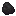
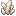
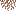
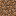
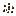
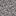
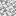
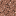

Лут и добыча
Общие принципы
Датапак изменяет поведение добычи блоков и выпадения предметов. Основная цель — реалистичность и введение редких, но обоснованных находок при добыче.
Изменения дропа блоков
| Блок | Дроп | Количество | Шанс (%) | |||
|---|---|---|---|---|---|---|
| — | Удача 1 | Удача 2 | Удача 3 | |||
 Каменистая земля Каменистая земля
|
Уголь | 1 | 8 | 10 | 12 | 14 |
 Кусочек железа Кусочек железа |
3-6 | 7 | 8,5 | 10 | 11,5 | |
 Кремень Кремень |
1 | 6 | 7 | 8 | 9 | |
| Незер-кварц | 1-2 | 5 | 6 | 7 | 8 | |
 Кусочек золота Кусочек золота |
2-4 | 4 | 5 | 6 | 7 | |
| Свисающие корни | 1 | 3 | 4 | 5 | 6 | |
| Земля | Комок глины | 1-3 | 7,5 | 8,75 | 10 | 12 |
 Кость Кость |
1-2 | 7 | 8,25 | 9,5 | 11 | |
 Ядовитый картофель Ядовитый картофель |
1 | 6 | 7 | 8 | 9 | |
| Свисающие корни | 1 | 5 | 5,5 | 6 | 6,5 | |
| Кусочек железа |
1-4 | 4 | 4,75 | 5,5 | 7 | |
| Незер-кварц | 1 | 3,5 | 4,25 | 5,25 | 6,5 | |
 Картофель Картофель |
1 | 3,5 | 4 | 4,5 | 5,25 | |
 Морковь Морковь |
1 | 3,25 | 3,75 | 4,25 | 5 | |
| Кусочек золота |
1-3 | 3 | 3,5 | 4 | 4,75 | |
| Кремень |
1 | 2,5 | 2,75 | 3 | 3,5 | |
 Дёрн Дёрн |
Низкая трава | 1 | 7 | 8,5 | 10 | 12,5 |
 Палка Палка |
1-2 | 6 | 7,25 | 8,5 | 10 | |
| Комок глины | 1-2 | 5 | 6 | 7 | 8 | |
 Семена пшеницы Семена пшеницы |
1-2 | 4,5 | 5 | 5,5 | 6 | |
 Семена тыквы Семена тыквы |
1-2 | 4,25 | 4,75 | 5,5 | 6 | |
| Семена арбуза | 1-2 | 4 | 4,5 | 5 | 5,5 | |
| Свисающие корни | 1 | 3,5 | 4 | 4,5 | 5 | |
 Семена свёклы Семена свёклы |
1-2 | 3 | 3,5 | 4 | 4,5 | |
| Кусочек железа |
1-3 | 2,5 | 3 | 3,5 | 4 | |
| Кусочек золота |
1-2 | 2 | 2,5 | 3 | 3,5 | |
 Булыжник Булыжник |
Гравий | 1 | 5 | 7,5 | 10 | 15 |
| Гравий | Кремень |
1-2 | 10 | 25 | 50 | 75 |
| Песок | 1 | 5 | 7,5 | 10 | 15 | |
| Кость |
1 | 7,5 | 8,25 | 9 | 10 | |
| Кусочек золота |
1-2 | 6 | 7 | 8 | 9 | |
| Кусочек железа |
1 | 4 | 4,5 | 5 | 5,5 | |
| Андезит | Кусочек железа |
1-2 | 3 | 5 | 7,5 | 10 |
| Кварц | 1 | 3 | 4 | 5,5 | 7 | |
| Диорит | Кусочек железа |
2-3 | 3 | 5 | 7,5 | 10 |
| Кварц | 1 | 2 | 3 | 4 | 5 | |
| Гранит | Кварц | 1 | 4 | 6 | 8,5 | 11 |
| Кусочек железа |
1 | 3 | 5 | 7,5 | 10 | |